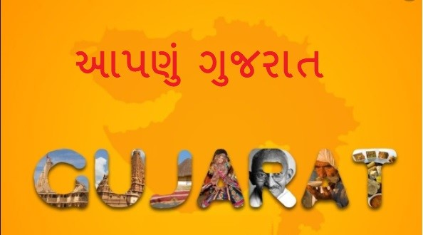
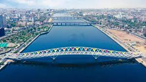
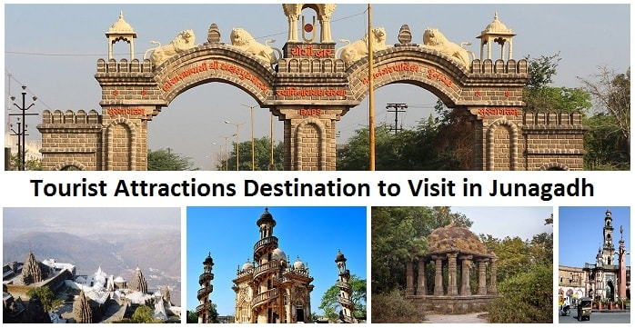
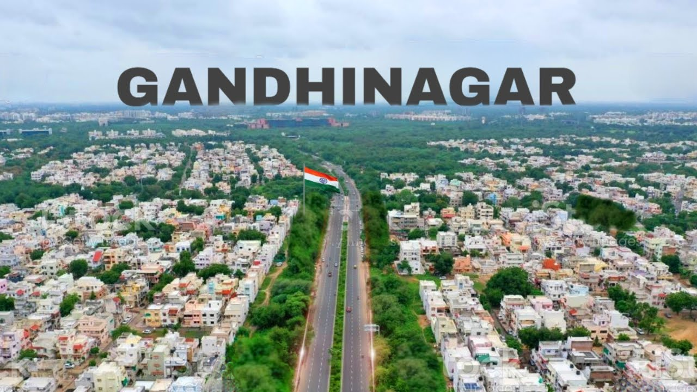

Beautiful Place information in Gujrat

Aavo Padharo, words of welcome in the language of Gujarat because it is here that these words
ring truly and the guest is 'God' and the people of Gujarat are gregariously friendly, inviting and will
entice you to come again and again.
Stretches out into the Arabian Sea, with a hint of the desert and with a coastline of 1600 kms
long is Gujarat –
the home state of Mahatma Gandhi, the Father of Nation.
It is renowned for its beaches, temple towns and
historic
capitals. Wildlife sanctuaries, hill resorts and natural grandeur are gifts of Gujarat. Sculpture,
handicrafts, arts,
festivals also make the state rich. Gujarat is also among the
most technologically advanced, housing the largest petrochemical complex in the country.
Gujarat Famous 5 District

Ahmedabad
7,214,225 Population

Surat
6,081,322 Population

Junagadh
2,743,082 Population

Jamnagar
2,160,119 Population

Gandhinagar
1,391,753 Population
Gujarat offers scenic beauty from Great Rann of Kutch to the hills of Saputara. Gujarat is the one
and only place to view pure
Asiatic lions in the world.[2] During the Sultanate reign, Hindu craftsmanship mixed with Islamic
architecture, giving rise to
the Indo-Saracenic style. Many structures in the state are built in this fashion. It is also the birthplace
of Shrimad Rajchandra,
Mahatma Gandhi and Sardar Vallabhbhai Patel, iconic figures of India's independence movement.
In recent years Statue Of Unity has emerged as the major tourist spot of Gujarat. It is the tallest statue
in the world.